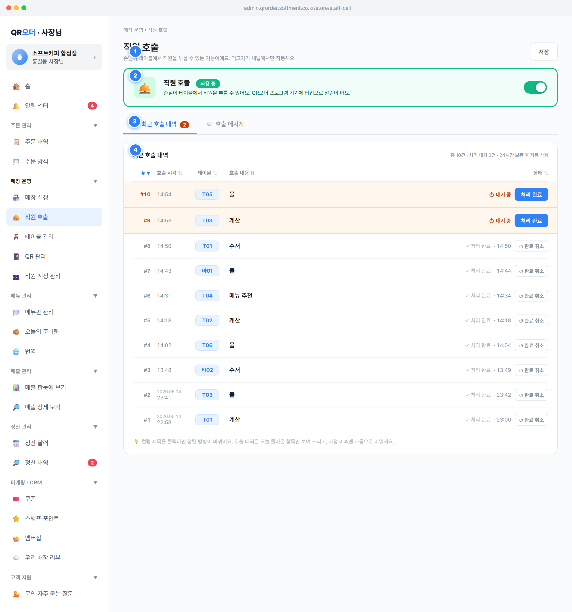

매장 운영 › 직원 호출, 제목 직원 호출, 부제 "손님이 테이블에서 직원을 부를 수 있는 기능이에요. 먹고가기 채널에서만 작동해요."state.staffCallTab='history'(최근 호출 내역). 사장(owner)·직원(staff) 모두 화면 열람 가능.StaffCallConfig(매장별 1개, DATA_MODEL §6.1), StaffCallMessage(호출 메시지, §6.2), StaffCallEvent(호출 이벤트, §6.3) 세 모델을 바인딩한다. 목업 더미: STAFF_CALLS, STAFF_CALL_HISTORY.table_id)은 "테이블 관리" 화면의 테이블과 연동된다. 처리 소요시간 통계는 어드민 통계 화면에 반영(STATES §7.1, §7.3).#10b981)+초록 배경 카드, 우측 스위치 노브 우측(켜짐), 상태 pill "사용 중"(초록), 설명 "손님이 테이블에서 직원을 부를 수 있어요. QR오더 프로그램 기기에 팝업으로 알림이 떠요." → 손님 화면에 호출 버튼 노출 + 호출 시 매장 기기 팝업 알림.STAFF_CALLS.enabled = !STAFF_CALLS.enabled로 즉시 토글 후 renderApp() 재렌더. 변경은 전역 저장 대상(GLOBAL_SAVE_SECTIONS에 'staff-call' 포함) — 저장 버튼으로 확정.enabled = true(DATA_MODEL §6.1, 신규 매장 기본 ON).StaffCallConfig.enabled (bool, NN, default true). 목업 STAFF_CALLS.enabled.StaffCallConfig.updated_at 갱신. 변경 즉시 손님 테이블 화면의 호출 버튼 노출 여부에 반영.markUnsavedUI)로 표시되고, 저장 시 서버 PATCH 성격.#c2410c)로 표시된다. 대기 0건이면 배지 숨김. pendingCnt = STAFF_CALL_HISTORY.filter(r=>!r.completedAt).length.MAX_MSG=15). 헤더 우측에 한도 미만이면 [+ 메시지 추가 (현재수/15)] 버튼, 한도 도달 시 "최대 15개" 텍스트로 대체.sort 재계산), 순번, 본문, 사용 토글(ON/OFF), 삭제 버튼 ✕. 토글 OFF면 행이 흐리게(off) 처리되고 손님 화면에서 해당 항목 숨김.maxlength=10) + 실시간 "N/10자" 카운터, 안내 "💡 한눈에 보이도록 짧은 단어로 적어 주세요. 예: 물, 수저, 계산, 메뉴 추천". 버튼 [취소] / [추가하기].confirmAddStaffMsg) 시 {id, body, enabled:true, sort} 신규 항목 push, 모달 닫고 토스트 "✅ 직원 호출 메시지를 추가했어요". 신규 메시지 기본 enabled=true.markUnsavedUI) 후 저장으로 확정.StaffCallMessage[{id, body, enabled, sort_order}](DATA_MODEL §6.2). 목업 STAFF_CALLS.messages[{id, body, enabled, sort}]. callHistory[]는 StaffCallEvent.body: string, NN, 최대 10자(입력 maxlength=10) — DATA_MODEL §6.2 string(10)과 일치. 공백만 입력 불가.MAX_MSG=15). DATA_MODEL §6.2도 15개로 정정 반영 완료.enabled 토글과 전역 StaffCallConfig.enabled는 별개: 전역 ON이어도 모든 메시지가 OFF면 손님 화면에 노출할 항목이 없다.# · 호출 시각 · 테이블 · 호출 내용 · 상태 (헤더 클릭 정렬).# 번호는 호출 인입 순서(가장 먼저 들어온 호출이 #1). called_at 오름차순으로 번호를 부여한 뒤 정렬 상태에 따라 표시.completedAt=null): "⏱ 대기 중" 라이브 표시 + [처리 완료] 버튼(파랑). 클릭(scCompleteCall) 시 completedAt=now 기록, 상태=완료로 전환, 대기 배지 -1.scUndoComplete) 시 completedAt=null로 대기 상태 원복.setStaffCallHistSort). 정렬 키: no·calledAt·table·body·status(0=대기,1=완료). 기본 정렬 {key:'no', dir:'desc'}(최신 인입 위). 활성 컬럼에 ▲/▼, 비활성 ⇅ 표시.calledDate 데이터만 노출. 어제 항목은 시각 위에 날짜(YYYY.MM.DD) 작게 표기.StaffCallEvent(id, table_id→table, message_id→body, called_at, resolved_at, resolved_by, handling_seconds)(DATA_MODEL §6.3). 목업 STAFF_CALL_HISTORY[{id, table, body, calledDate, calledAt, completedAt}].resolved_at=now, resolved_by=user_id(staff), handling_seconds = resolved_at - called_at 사전 계산(STATES §7.1).handling_seconds는 어드민 통계의 평균 처리 시간(avg(handling_seconds) where resolved_at IS NOT NULL, 당일 영업일 기준)에 즉시 반영(DATA_MODEL §6.3, STATES §7.1).resolved_at=영업일 종료 시각, resolved_by=null)되며 평균 처리 시간 통계에서 제외(STATES §7.3).resolved_at IS NULL이고 called_at+10분 초과 시 사장에게 알림 "처리되지 않은 호출이 있어요" + 어드민 상단 빨간 배지(STATES §7.3).debounce_seconds(기본 30초) 내 재호출되면 DB 미기록(내역에 안 뜸), 손님 화면 토스트 "방금 호출했어요. 잠시 기다려 주세요"(STATES §7.2).id 기준으로 동작하므로 정렬·재번호와 무관하게 정확한 행을 갱신한다.